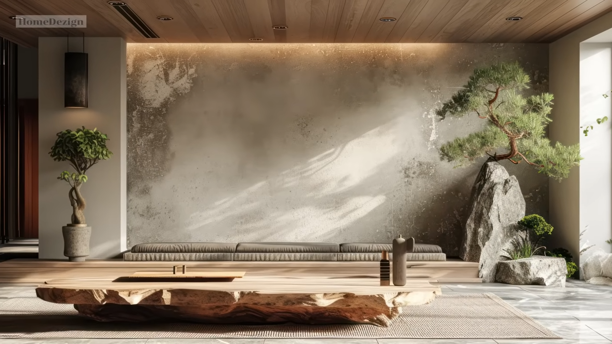
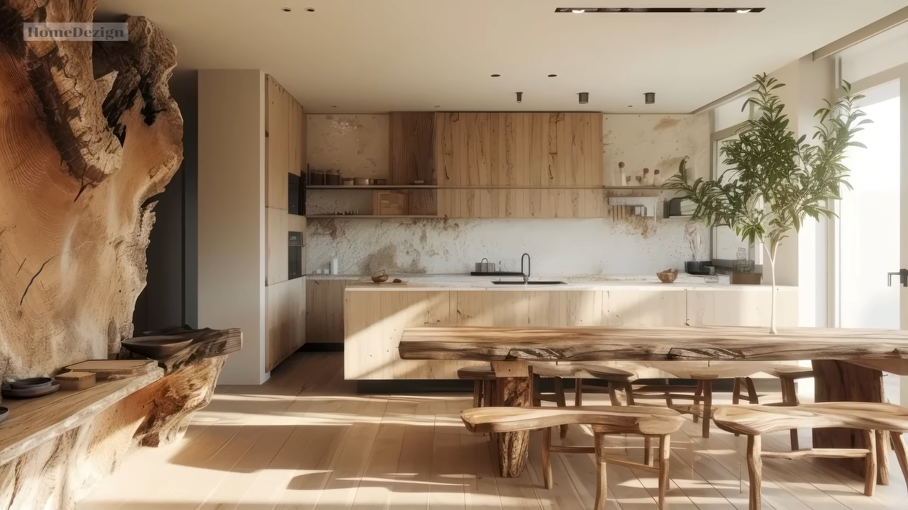
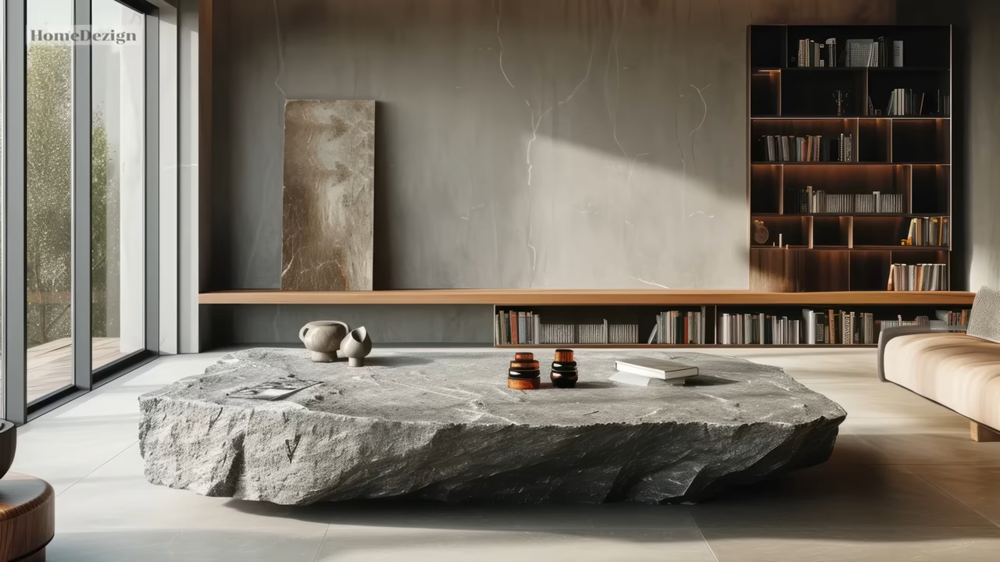
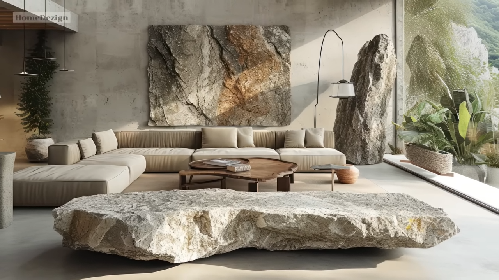

Unveiling the Beauty of Raw Materials: Contemporary Interior Design Inspirations
Hello, design enthusiasts! Welcome back to Home Design Channel. Today, we're diving into the modern interior design world where raw beauty meets contemporary elegance. This video explores how natural wood and stone can elevate your living spaces.

Raw beauty is an interior design concept that combines natural elements with a modern, minimalist, and elegant style. It showcases the beauty and uniqueness of natural materials, specifically wood and stone, creating a warm, comfortable, and authentic atmosphere in your space. Embracing raw beauty in your interior design not only brings harmony with nature but also promotes a deeper environmental connection.

By incorporating natural textures, earthy tones, and organic shapes, a serene ambiance is fostered, inviting relaxation and rejuvenation. Sustainable materials reduce environmental impact and support ethical consumption practices. Natural materials like wood, whether reclaimed, rustic, or polished, bring warmth and character to any room.
The video emphasizes ways to enhance modern interiors with raw beauty, such as embracing wooden elements like hardwood floors, raw wooden tables or chairs, and using wood as wall decoration or exposed beams. The natural texture of wood, from the grain patterns of oak to the knots of pine or the rugged edges of reclaimed wood, each piece tells a unique story.

Raw wood's versatility allows it to adapt to various design styles, making it an excellent choice for contemporary interiors. Moreover, stone accents, with robust and earthy qualities, add rugged elegance through feature walls, fireplace surrounds, or statement furniture pieces. The blend of natural wood and stone creates a harmonious mix of raw beauty and modern aesthetics.

As the video comes to a close, it presents a curated compilation showcasing exquisite integration of raw stone and wood in contemporary home interior decoration and furniture. This footage offers a comprehensive look into these natural materials' diverse applications, highlighting their inherent beauty and versatility in contemporary design schemes.
For those seeking tranquility, inspiration, and a touch of raw magic, incorporating these materials will make your interiors come alive. Remember to show your support by liking, subscribing, and hitting the notification bell for more inspiring content.
Start using PromeAI's Sketch Rendering right away.
Feel the charm of different Raw Materials with AI tools.